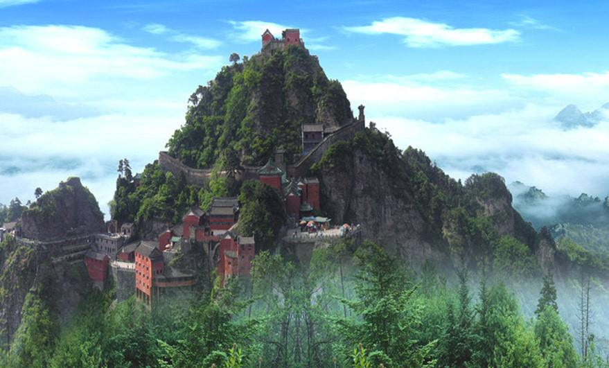

武当山

武当山古名太和山，位于湖北省十堰市境内，是我国著名的道教圣地之一。武当山山势雄伟，是天下第一仙山，自古以来是道家追求仙境的理想之地。
那年的国庆节，我有幸游览了这天下第一仙山。我们从并不起眼的大门台阶上去，首先映入眼帘的景象让我惊呆了，高峭的山峰一座连一座，山上的茂密的树木郁郁葱葱，陡峭的石阶蜿蜒曲折，像一条条银蛇盘旋在山腰上，让人望而生畏。
我们决定先从南岩宫这边进发，顺着陡峭的石阶上去，一路上有很多卖小纪念品的，还有的路旁的树上挂着许许多多的红布条，听说人们把愿望写在上面，然后扔到树枝上，上天就会保佑他梦想成真的。一路的风景让我目不暇接，我一边走一边看路边的小野花，它们五颜六色，争奇斗艳，为这里增添了不少生气，我真佩服它们顽强的生命力，居然能在坚硬的石头上生存下来。我们拾阶而上，来到了刻有“大岳武当”的南岩宫，在石碑的旁边有一个莲花座，有很多人坐在上面照相，我从人缝间钻到了莲花座跟前，等人一下来，我就迫不及待地爬上去抢占了先机，我学着电视里观音菩萨的模样，盘腿坐着，一只手向外伸开，另外一只手放在胸前，我滑稽的模样引得游客们大笑。南岩宫由好多大大小小庙宇组成，人们纷纷到各个佛像前烧香磕头，当然我们也不例外。
经过不懈的长途跋涉，我们终于到达了最高峰——金顶，金顶的面积不大，上面就一座庙宇，那就是金殿，果然名不虚传，它真的是金碧辉煌，跟别的庙宇不一样，大殿内挤满了前来膜拜的人，在大殿的门前两旁有两只仙鹤亭亭玉立地站在那里，它们个个昂首挺胸，嘴巴微张，十分庄严。大殿前方的正中央有一个尖顶像小房子的建筑，里面挂着一口圆锥型的古钟，它仿佛记录着这里古老的历史。我还在这里留下了一张美好的影像呢。
美丽巍峨的武当山，我下次还会“造访”你的。